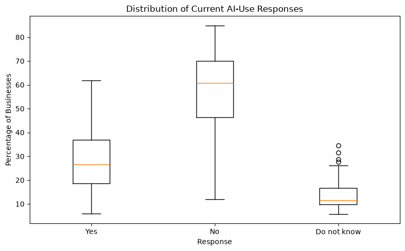
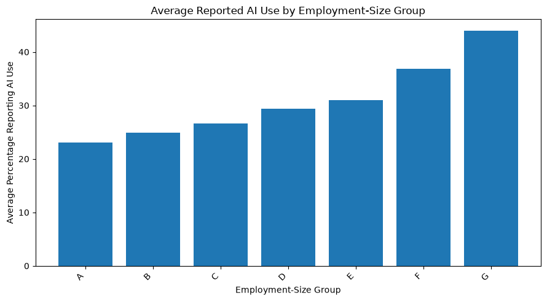
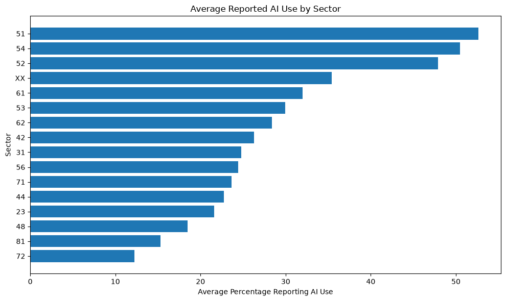
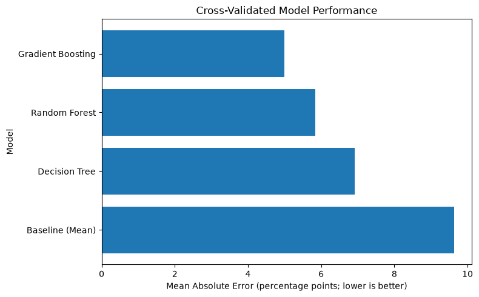
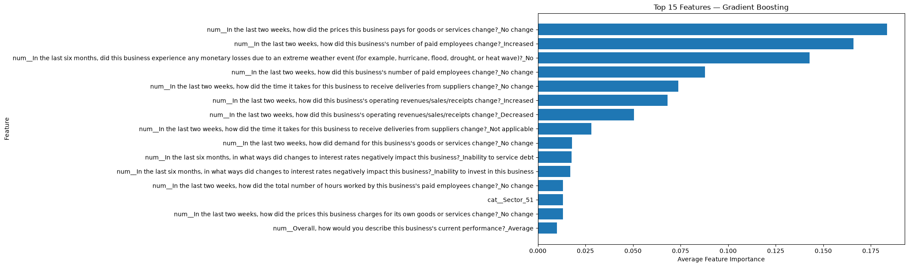

MACHINE LEARNING
Predicting Business AI Use
Can business characteristics and economic conditions be used to predict the percentage of businesses reporting that they use artificial intelligence?
01 — PROBLEM DEFINITION
Predicting AI Use Across Business Groups
Artificial intelligence adoption is becoming an increasingly important part of business decision-making. Most people equate the us of AI at a company as successful, but what does "using AI" really mean? When I first started this project my goal was to prove that AI use does not equate to revenue gain. BUt as I looked more and more at the data I realized I need to take a few steps back. AI adoption is not uniform across businesses. Industry, business size, economic conditions, and other characteristics may all be associated with whether businesses report using AI. My project is tiny puzzle piece in comparison to the big picture of whether AI is truly benifitting business in the way it is marketed.
The goal of this project was to build a machine-learning system that predicts the distribution of current AI-use responses across groups of businesses. Rather than predicting a single category, the model predicts three continuous percentages: Yes, No, and Do not know.
Because the three outcomes represent parts of the same response distribution, this project is treated as a multi-output regression problem. Final predictions are normalized so that the three predicted percentages total 100 percent for each business group.
02 — BACKGROUND & CONTEXT
Why Business AI Adoption Matters
AI adoption can affect how businesses approach productivity, staffing, pricing, customer service, forecasting, and other operational decisions. Understanding differences in adoption across industries and business sizes can provide useful context for understanding how AI is becoming integrated into the business environment.
This project uses information from the U.S. Census Bureau's Business Trends and Outlook Survey (BTOS). BTOS publishes survey estimates describing current business conditions and includes questions concerning businesses' use of artificial intelligence.
A model that predicts AI-use patterns does not establish why a business adopts AI. Prediction and causal explanation are different analytical goals.
03 — DATA DESCRIPTION
Business Conditions and AI Use
Data Source
The analysis uses publicly available aggregated estimates from the U.S. Census Bureau's Business Trends and Outlook Survey (BTOS), specifically the Sector by Employment Size Class data.
Unit of Analysis
The publicly available BTOS data are aggregated survey estimates rather than business-level microdata. For this analysis, each sector × employment-size combination within the selected survey period is treated as one observational unit.
The final modeling table contains 89 unique sector and employee-size groups.
Target Variables
Target: Yes
Percentage of businesses in the group reporting that they currently use artificial intelligence.
Target: No
Percentage of businesses in the group reporting that they do not currently use artificial intelligence.
Target: Do not know
Percentage of businesses in the group reporting that they do not know whether their business currently uses artificial intelligence.
Prediction Structure
The three target percentages represent one complete response distribution and should total approximately 100 percent.
04 — DATA UNDERSTANDING & EXPLORATION
Understanding the Prediction Problem
Before modeling, the data were examined for target distributions, missing and suppressed estimates, categorical variables, numerical predictors, duplicate groups, and differences in reported AI use across sectors and employment-size categories.
Sector and employment-size group were retained as categorical predictors. Additional numerical predictors were created from other BTOS question-and-answer estimates describing business conditions.
Some Census estimates are suppressed and therefore unavailable for analysis. Suppressed values were converted to missing values rather than treated as zero. Groups were retained for supervised learning only when all three target percentages were published.

This comparison shows the distributions of the three continuous target variables before model training.

Differences across employment-size groups support retaining employment size as a categorical predictor.

Reported AI use varies across sectors, supporting the inclusion of sector as a predictor.
A major consideration during exploration was that the target is not a conventional classification variable. Every group has three continuous percentages describing the distribution of responses.
This led to treating the problem as a multi-output regression task rather than assigning each group to only one response category.
05 — DATA PREPARATION & FEATURE SELECTION
Preparing the Data for Machine Learning
01 — Target Preparation
Published Yes, No, and Do not know percentages were reshaped into three separate continuous target variables.
02 — Suppressed Values
Suppressed or unavailable Census estimates were converted to missing values. They were not interpreted as reported zero values.
03 — Categorical Encoding
Sector and employment-size group were treated as categorical predictors. Missing categorical values were imputed with the most frequent value and then one-hot encoded.
04 — Numerical Imputation
Missing numerical predictor estimates were imputed using the median within the machine-learning preprocessing pipeline.
Imputation and categorical encoding were performed inside the modeling pipeline. During cross-validation, preprocessing was therefore learned from each training fold rather than from the full dataset, preventing information from the validation fold from leaking into model preparation.
06 — BASELINE & MODEL DEVELOPMENT
Establishing a Baseline and Training Models
A mean-prediction baseline was created using a Dummy Regressor. This establishes the level of error expected from a model that does not learn meaningful relationships between the business characteristics and the AI-use outcomes.
Three trained machine-learning approaches were then evaluated using the same predictors, preprocessing pipeline, cross-validation splits, and error metric.
Mean Predictor
Predicts the mean percentage for each target and provides a minimum performance benchmark.
Decision Tree Regressor
Captures nonlinear decision rules and interactions while remaining relatively interpretable.
Random Forest Regressor
Combines many regression trees to reduce the instability of a single tree and capture nonlinear relationships.
Gradient Boosting Regressor
Builds a sequence of smaller models that focus on correcting errors from earlier models.
07 — MODEL EVALUATION & SELECTION
Comparing Model Performance
All models were evaluated using the same shuffled five-fold cross-validation strategy. Each observation therefore served as validation data in one fold while the model was trained on the remaining observations.
Mean Absolute Error (MAE) was selected as the primary performance metric. Because the targets are percentages, MAE can be interpreted directly as the model's average absolute prediction error in percentage points. Lower MAE indicates better predictive performance.

The final model is selected using the lowest mean cross-validated MAE rather than training performance alone.
The cleaned analysis selects the preferred trained model automatically according to the lowest five-fold cross-validated MAE. This allows the final decision to be based on expected performance on unseen observations rather than how closely a model fits the training data.
08 — MODEL INTERPRETATION & INSIGHTS
What the Model Learned
After model selection, the preferred model was fit using all usable observations. For tree-based models, feature importance was examined to identify which predictors contributed most strongly to the model's predictions.

Feature importance measures how useful each predictor was to the selected model. It does not demonstrate that the predictor causes AI adoption.
Feature importance can help explain the model's behavior by showing which business characteristics and survey measures contributed most strongly to its predictions.
These importance values are predictive rather than causal. A feature can help a model make accurate predictions without being the reason businesses adopt or avoid AI.
09 — ERROR ANALYSIS
Examining Prediction Errors
Error analysis was performed using out-of-fold predictions. This is important because each observation is evaluated using predictions from a model that was not trained on that observation.
Absolute prediction errors were calculated separately for the Yes, No, and Do not know targets and then averaged at the sector × employment-size level.
Out-of-fold error analysis provides a more realistic view of where the model performs well or poorly than examining predictions made on the same observations used to train the final fitted model.
10 — LIMITATIONS, ETHICS & REFLECTION
What the Model Can and Cannot Tell Us
Aggregated Data
The publicly available BTOS data contain aggregated survey estimates rather than individual business records. The model therefore predicts group-level AI-use percentages and should not be interpreted as predicting the behavior of a specific company.
Limited Sample
The final modeling dataset contains only 89 sector and employee-size groups. The relatively small sample limits how confidently model performance can be generalized beyond the groups represented in the data.
Suppressed Estimates
Some Census estimates were suppressed and unavailable. Although preprocessing can handle missing predictors, the absence of these estimates may still affect the patterns the model is able to learn.
Ethical Considerations
Predictions about AI adoption could be misused if group-level model estimates were treated as definitive assessments of individual businesses. A sector or employee-size group predicted to have greater AI use does not mean every company within that group uses AI.
These predictions should not be used as the sole basis for employment, lending, regulatory, or other high-impact decisions. Incorrect predictions could lead users to overestimate or underestimate AI adoption within specific groups.
One of the most important lessons from this project is that strong training performance does not necessarily mean that a model will perform equally well on new data.
Using the same cross-validation procedure for every model made the comparison more meaningful and allowed model selection to focus on generalization rather than training fit.
The project also demonstrates why interpretation matters. Predictive importance can reveal useful patterns, but it should not be treated as evidence of causation.
11 — CONCLUSION
Final Takeaways
This project demonstrates an end-to-end machine-learning workflow for estimating the distribution of current AI-use responses across U.S. business sector and employment-size groups.
The analysis compares a mean baseline with Decision Tree, Random Forest, and Gradient Boosting regression models using consistent five-fold cross-validation and Mean Absolute Error.
The final model is selected according to cross-validated performance, while out-of-fold predictions are used for error analysis so that individual observations are evaluated without being used to train the model that predicts them.
The results can identify patterns that are useful for predicting group-level AI-use percentages, but they do not establish that any particular business characteristic causes AI adoption.
12 — CODE & TRANSPARENCY
Code & Transparency
The complete Python analysis includes data preparation, exploratory data analysis, missing-value handling, leakage-safe preprocessing, baseline development, model training, model comparison, cross-validation, prediction normalization, feature importance, out-of-fold error analysis, and export of the final results.
AI Usage Disclosure
Generative AI Disclosure: I used OpenAI ChatGPT (GPT-5.6 Sol) as a support tool during this project to help troubleshoot Python errors, explain machine-learning and statistical concepts, assist with code development, clean and organize the final notebook, and improve the clarity and organization of the project presentation. I independently evaluated the dataset, made analytical decisions, executed and reviewed the Python analysis, evaluated the model results, and determined the final conclusions.
13 — SOURCES
Data & Supporting Sources
U.S. Census Bureau. (n.d.). Business Trends and Outlook Survey (BTOS): Data downloads.
U.S. Census Bureau. (n.d.). Business Trends and Outlook Survey (BTOS).
Pedregosa, F., Varoquaux, G., Gramfort, A., Michel, V., Thirion, B., Grisel, O., Blondel, M., Prettenhofer, P., Weiss, R., Dubourg, V., Vanderplas, J., Passos, A., Cournapeau, D., Brucher, M., Perrot, M., & Duchesnay, É. (2011). Scikit-learn: Machine learning in Python. Journal of Machine Learning Research, 12, 2825–2830.
Peer-Reviewed Sources
Felten, E., Raj, M., & Seamans, R. (2021). Occupational, industry, and geographic exposure to artificial intelligence: A novel dataset and its potential uses. Strategic Management Journal, 42(12), 2195–2217. https://doi.org/10.1002/smj.3286
Frank, M. R., Ahn, Y.-Y., & Moro, E. (2025). AI exposure predicts unemployment risk: A new approach to technology-driven job loss. PNAS Nexus, 4(4), pgaf107. https://doi.org/10.1093/pnasnexus/pgaf107
Jetha, A., Crouch, M., Vold, K., Peters, S. E., Vietas, J., Sriharan, A., & Irvin, E. (2025). Artificial intelligence in the workplace: A living systematic review protocol on worker safety, health, and well-being implications. Systematic Reviews, 14, 255. https://doi.org/10.1186/s13643-025-03000-0